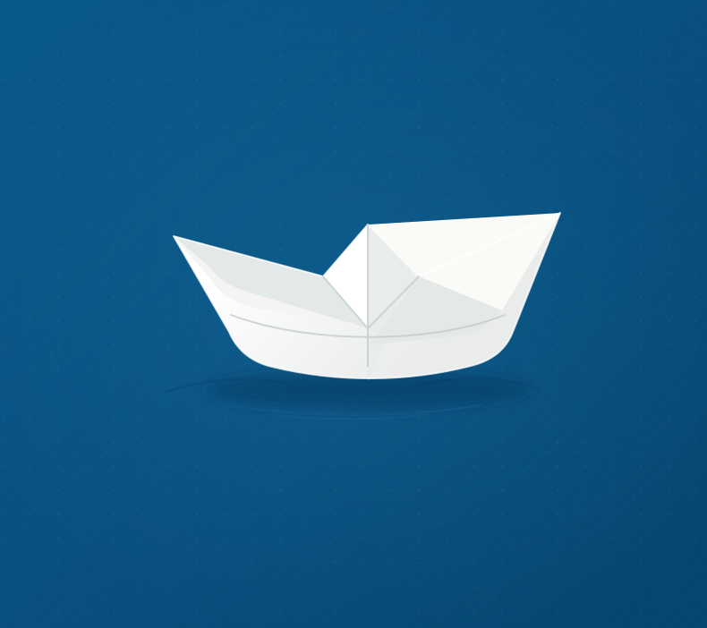

Portefølje
Sanne Bautz Busland Bakken Brembo
Jeg er (Produkt/UX/UI/Grafisk/tjeneste) designer.
Akkurat nå (2026) jobber jeg som UX designer hos: Telenor Norge.
+ fullfører master i produktdesign!

Portefølje
Jeg er (Produkt/UX/UI/Grafisk/tjeneste) designer.
Akkurat nå (2026) jobber jeg som UX designer hos: Telenor Norge.
+ fullfører master i produktdesign!
